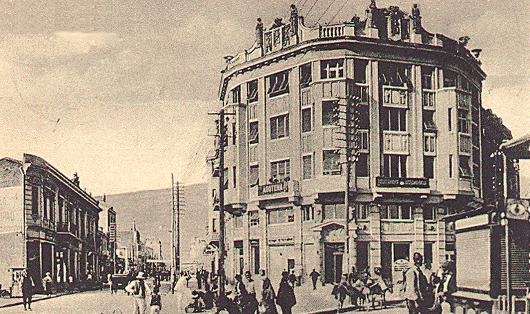
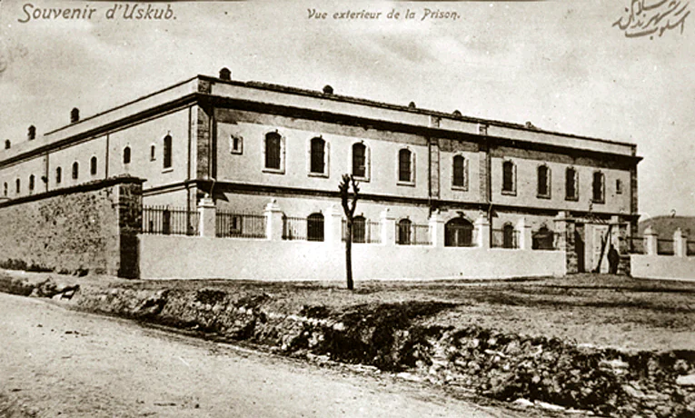
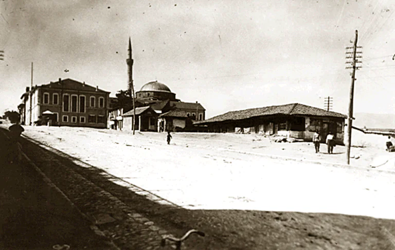
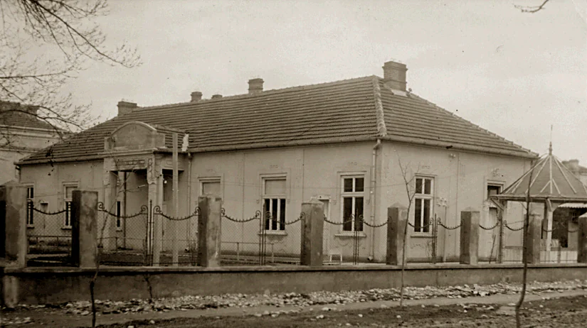
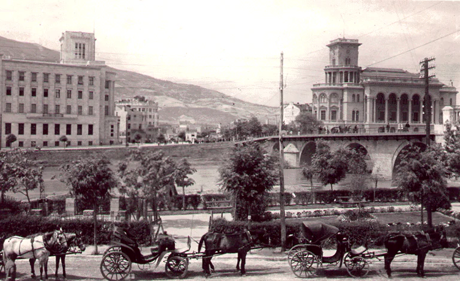
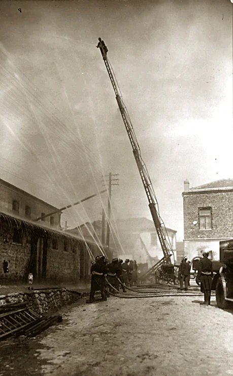

Skopje 1916 - 1917 Panorama 1
Dokumente aus den Balkankriegen
- Jahr
- 1916-1917
- Dauer
- 00:11

Hotel Turati. Erbaut Ende des 19. Jahrhunderts.

Das Foto wurde vom Gebäude des alten Bahnhofs aufgenommen - dem heutigen Museum der Stadt Skopje -, der 1873 in der Zeit des Osmanischen Reiches erbaut wurde. Im Vordergrund die Zufahrt zum Bahnhof mit eingezäunten Grünflächen. Daran schließt die Hauptstraße zum Platz an. Am Anfang der Straße links das Hotel „Rusija“.

Blick auf die Hauptstraße „Makedonija“. Das Tor wurde zu Ehren eines wichtigen Gastes errichtet. Links davon das Hotel „Rusija“. - Anfang des 20. Jahrhunderts.

Das Gerichtsgebäude, 1920er Jahre.

Das Gerichtsgebäude, 1920er Jahre.

Das Gebäude der Jüdischen Gemeinde - 1920er Jahre.

Das Haus der serbischen Schwestern - 1920er Jahre.

Skopje nach 1930. Blick auf die Hauptstraße, vom heutigen Museum der Stadt Skopje zum Platz hin. Die beiden höheren Gebäude sind das Grand Hotel „Bristol“ und rechts daneben das Hotel „Srpski Kralj“. Die Architektur zeigt eklektisch gestaltete Elemente.

Die Hotels Srpski Kralj und Bristol. - 1920er Jahre.

Das Haus der Brüder Čitkušev. - 1920er Jahre

Das Haus des Apothekers Ristić, im Volksmund Ristić-Palast genannt. Links im Bild ist ein Teil des Hotels „Weißer Adler“ zu sehen. (1920er Jahre)

Ristić-Palast - um 1925.

Der Ristić-Palast. Links im Bild ist ein Teil des Hotels „Weißer Adler“ zu sehen. (um 1925)

Hotel „Pariz“. Fotografiert ist der Hof des Hotels mit Bierstube und Konditorei. - 1920er Jahre

Hotel „Moskva“ - 1930er Jahre

Die Osmanische Bank - um 1910.

Der kleine Platz direkt an der Steinbrücke am linken Ufer des Vardar. Im Vordergrund das Denkmal für die Gefallenen der Balkankriege, rechts hinten die Osmanische Bank.
- 1920er Jahre

Das neue Hotel „Sarajevo“ im Bau - am Platz. Links davon das Theatercafé, darüber das alte Hotel „Sarajevo“. - 1920er Jahre

Der Platz mit dem Hotel „Sarajevo“ und dem beliebten Café „Marger“, einem Lieblingsort der Bürger von Skopje. Links vom Hotel „Sarajevo“ stand das Hotel „Obedinuvanje“. Im Vordergrund sitzt ein Brezelverkäufer auf dem Gehweg. (um 1935)

Die Kaserne der Festung von Skopje - Kale. - 1920er Jahre

Das Gefängnisgebäude in Skopje. Es stand in unmittelbarer Nähe der Mustafa-Pascha-Moschee. - Ende des 19. Jahrhunderts

Der Hükümat (das Rathaus). Daneben die türkische Post, dahinter die Mustafa-Pascha-Moschee. - 1920er Jahre

Der Hükümat (das Rathaus). Daneben die türkische Post. Im Hintergrund ist die Mustafa-Pascha-Moschee zu sehen. - 1920er Jahre

Der Hükümat (das Rathaus). Daneben die türkische Post, dahinter die Mustafa-Pascha-Moschee. - 1920er Jahre

Das Gebäude der Finanzinspektion. Heute ist hier das Institut für Edelmetalle untergebracht. In osmanischer Zeit war es der „Hükümat“ (das Rathaus). - 1930er Jahre

Die Turnhalle oder das Sokol-Haus von Skopje „Sokolana“, erbaut 1936.

Das Sokol-Haus in Skopje, erbaut 1936.

Das Militärkrankenhaus „Roter Halbmond“ - Ende des 19. Jahrhunderts. Das Gebäude zeichnet sich durch einen akademischen Stil mit Renaissance- und Barockformen aus.

Das Militärkrankenhaus „Roter Halbmond“, errichtet Ende des 19. Jahrhunderts. Das Gebäude zeichnet sich durch einen akademischen Stil mit Renaissance- und Barockformen aus. (1920er Jahre)

Das Militärkrankenhaus „Roter Halbmond“, errichtet Ende des 19. Jahrhunderts.

Das Militärkrankenhaus „Roter Halbmond“, errichtet Ende des 19. Jahrhunderts.

Blick auf die Hauptstraße, vom heutigen Museum der Stadt Skopje zum Platz hin. Der Krang-Palast mit klassischen und barocken Elementen. Darin befand sich das Kino „Kapitol“. Im Hintergrund des Fotos das Offiziersheim. - 1930er Jahre

Sanatorium „Vardar“ - 1930er Jahre

Das Haus des Zahnarztes Dr. Ruben, der seine Praxis direkt an der Steinbrücke auf der linken Seite des Vardar hatte. - 1930er Jahre

Postgebäude. - 1930er Jahre

Die Nationalbank, erbaut nach dem Entwurf des Architekten B. Nestorović. Ein vereinfachter Akademismus in der Gestaltung der Schmuckelemente und Einflüsse der Moderne. - 1930er Jahre.

Die Nationalbank bei Nacht. Davor ein Teil der Flaniermeile der Bürger von Skopje, im Volksmund „Korso“ genannt. - 1930er Jahre.

Die Nationalbank, erbaut nach dem Entwurf des Architekten B. Nestorović. Ein vereinfachter Akademismus in der Gestaltung der Schmuckelemente und Einflüsse der Moderne. Rechts die Wirtschafts- und Handelskammer (Architekt M. Zloković) - 1930er Jahre.

Die Steinbrücke mit der Nationalbank im Hintergrund. - 1930er Jahre

Die Nationalbank, das Offiziersheim und ein Teil der Steinbrücke. - 1930er Jahre

Die Nationalbank mit dem Offiziersheim und der Steinbrücke. Aufgenommen vom linken Ufer des Vardar, vom kleinen Platz, wo die Pferdekutschen standen. (1930er Jahre)

Das alte Mädchengymnasium. - 1930er Jahre

Das Wärmekraftwerk in Skopje - 1910

Das Innere des Wärmekraftwerks in Skopje - 1910

Die Arzneimittelfabrik. - 1920er Jahre.

Die erste Tankstelle „Shell“ in Skopje. - 1927

Übung der Feuerwehr von Skopje. - 1930er Jahre.

Eine typische Schneiderwerkstatt im alten Basar - 1920

Haltestelle der Fuhrleute mit Pferdewagen. - 1920er Jahre

Die Lederfabrik in Skopje. - 1920er Jahre.

Der Steinbruch in Skopje, in Kisela Voda, an den Hängen des Vodno. - 1920er Jahre.

Der Flugplatz bei Skopje - 1933. Er lag am heutigen Standort der Viertel Aerodrom und Jane Sandanski.

Die Pferderennbahn in Skopje. (Ende der 1920er Jahre)

Der Kinosaal „Vardar“ - 1940er Jahre. Zwischen den beiden Weltkriegen gab es in Skopje folgende Kinos: Zrinjski, Apolo (1930 abgebrannt, an seiner Stelle entstand das Kino Korzo), Balkan, Vardar, Kapitol, Uranija, Avala.

Das Denkmal für die im Ersten Weltkrieg gefallenen Schüler - 1920er Jahre.

Stadtapotheke. - 1932.

Die Arbeiterversicherungsanstalt (heute das Stadtkrankenhaus). - 1930er Jahre

Das Parlament der R. Mazedonien, 1940er Jahre. Damals war hier die Gebietsdirektion.

Das heutige Parlament der R. Mazedonien - die Jahre vor dem Erdbeben.

Stara - Nova Banja. Ein Teil von Skopje am Standort der heutigen Universität „Hl. Kyrill und Method“

Das Gebäude der Verwaltung für innere Angelegenheiten, erbaut in den 1950er Jahren. Später waren hier die Juristische, die Wirtschafts- und die Philosophische Fakultät sowie das Rektorat untergebracht.

Der Justizpalast, gleich nach dem Erdbeben. Links daneben die alte Moschee „Elen Kapan“.

Das Gebäude der Elektrizitätswirtschaft (1962-1964), in unmittelbarer Nähe des Stadtplatzes.

Das städtische Einkaufszentrum. Der Bau begann offiziell am 11. Oktober 1969; am 27. April 1973 wurde der zentrale Teil eröffnet, seitdem ist der Komplex in Betrieb.

Das städtische Einkaufszentrum (1969 - 1973) mit einem Teil des Parks „Kämpferin“.

Das städtische Einkaufszentrum (1969 - 1973) mit der gestalteten Grünfläche des Parks „Kämpferin“.

Dokumente aus den Balkankriegen
Filmschau Nr. 21
 Aquädukt4 Postkarten
Aquädukt4 Postkarten Kale30 Postkarten
Kale30 Postkarten Brücken60 Postkarten
Brücken60 Postkarten Kai58 Postkarten
Kai58 Postkarten Platz46 Postkarten
Platz46 Postkarten Bauten66 Postkarten
Bauten66 Postkarten Christliche Gotteshäuser19 Postkarten
Christliche Gotteshäuser19 Postkarten Muslimische Bauten33 Postkarten
Muslimische Bauten33 Postkarten Offiziersheim29 Postkarten
Offiziersheim29 Postkarten Theater28 Postkarten
Theater28 Postkarten Bahnhof13 Postkarten
Bahnhof13 Postkarten Schulen36 Postkarten
Schulen36 Postkarten Parks12 Postkarten
Parks12 Postkarten Märkte18 Postkarten
Märkte18 Postkarten Straßen38 Postkarten
Straßen38 Postkarten Panorama I60 Postkarten
Panorama I60 Postkarten Panorama II30 Postkarten
Panorama II30 Postkarten Collagen55 Postkarten
Collagen55 Postkarten Hochwasser9 Postkarten
Hochwasser9 Postkarten Erdbeben27 Postkarten
Erdbeben27 Postkarten Skopje 200026 Postkarten
Skopje 200026 Postkarten